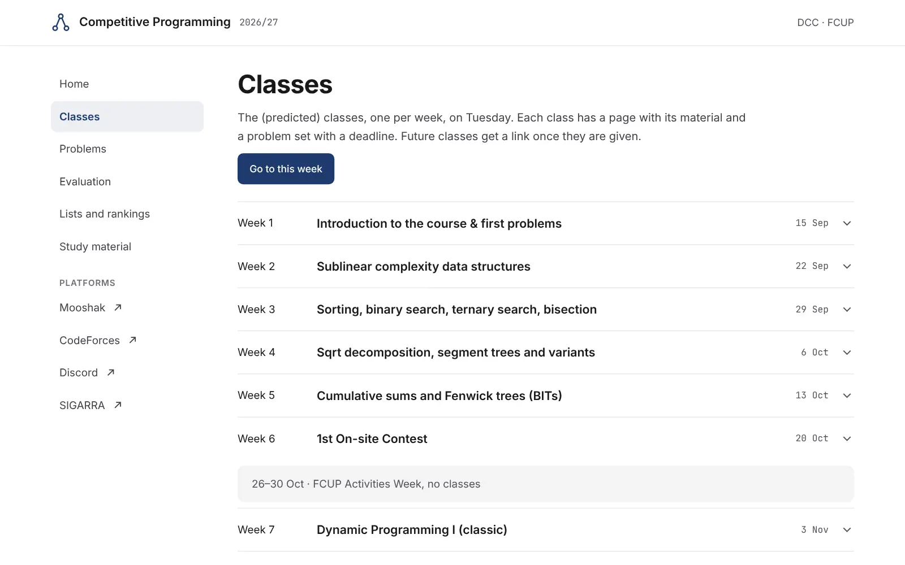
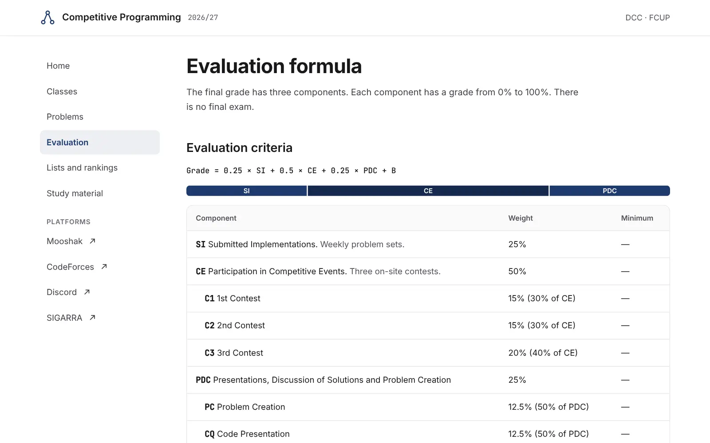
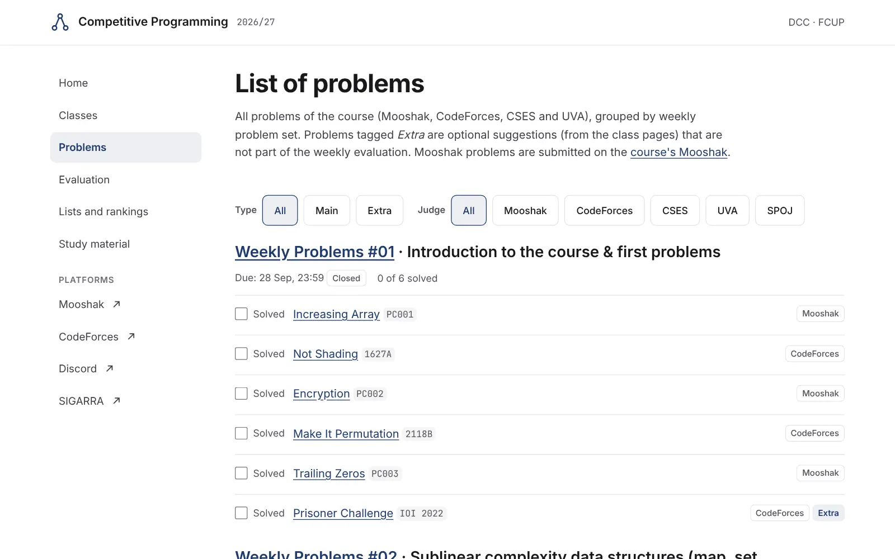

Exemplos
Competitive Programming 2026/27
O site de Competitive Programming (CC3032, DCC/FCUP), refeito com o kit a partir do site original, que era uma única página com âncoras: seis páginas na navegação, uma página por aula, sete problem sets com prazo, um concurso e 37 enunciados. Mostra uma cadeira organizada à volta de prazos semanais e concursos.
O conteúdo deste exemplo (textos, aulas, problem sets, enunciados e imagens) é do Prof. Pedro Ribeiro e foi copiado do site original só para demonstrar o kit. Não está abrangido pela licença MIT: ver o NOTICE.md. Use-o como referência de estrutura, não como conteúdo a copiar.
O site

<uc-this-week> junta a aula, o problem set e o próximo prazo.
<uc-weeks> com uma aula por semana, à terça.
<uc-grading> com subcomponentes e simulador de nota.
<uc-problems> agrupados por problem set, com filtro por juiz.Páginas e o que usam
| Página | Componentes | Blocos e notas |
|---|---|---|
index.html | <uc-hero>, <uc-this-week>, <uc-notices>, <uc-deadlines>, <uc-team> | uc-split para avisos e datas, uc-shortcuts para os atalhos. |
classes.html | <uc-weeks>, <uc-week> | Uma <uc-week> por aula, com a página da aula e o problem set; os concursos e os prazos vêm do course.js. |
evaluation.html | <uc-grading calculator>, <uc-deadlines view="table">, <uc-date> | Componentes SI, CE e PDC com subcomponentes, uc-grid, uc-card, uc-callout. |
materials.html | — | Cartões dos juízes online e dos livros, uc-links. |
rankings.html | — | Só links para o site original, porque as listas têm dados de estudantes. |
problems/index.html | <uc-problems> | 52 problemas (Mooshak, CodeForces, CSES, UVA, SPOJ) agrupados por problem set, com filtros e "Resolvido". |
classes/week01–07.html | — | Páginas das aulas migradas dentro de uc-content, com migalhas e ligação ao problem set. |
problem-sets/ps01–07.html | — | Migradas em uc-content; os prazos passaram para o course.js. |
contest1.html | <uc-assessment-info> | Informação do concurso; os resultados ficam no original. |
problems/pc001–037.html | — | Enunciados em uc-content, exemplos em uc-table com <pre data-copy>, fórmulas com MathJax. |
Todas as páginas usam <uc-page>. As que não estão na navegação dizem qual é o item ativo com current: ver páginas em subpastas.
O course.js
O course.js deste exemplo mostra como descrever uma cadeira com uma aula por semana:
languages: ["en"]: o site original só existia em inglês, por isso o exemplo também.- O semestre com 11 semanas e uma aula à terça (
teachingDays), e duas interrupções: a semana de Atividades FCUP e os feriados de 1 e 8 de dezembro. - Seis páginas na navegação e quatro plataformas (Mooshak, CodeForces, Discord e SIGARRA); CSES, UVA e SPOJ estão lá com
hidden: true, só para o<uc-problems>os reconhecer como juízes. - Os prazos dos problem sets (
kind: "submission") e os concursos; os que ainda não têm dia ficam só com o mês (2027-01). todayfixo em 17 de novembro de 2026, para a demonstração mostrar sempre a semana 9.search: true: o botão «Pesquisar» do cabeçalho procura nas 58 páginas, e a lista de problemas tem uma caixa<uc-search scope="problems/">que procura só nos enunciados. O índice (cerca de 105 KB) é gerado pelouc-site.py.
Personalização
| Nível | No exemplo |
|---|---|
0: course.js | A cor de destaque (#1E3A6E), as páginas e as plataformas. |
| 2: CSS livre | Um theme.css pequeno (cartões dos livros, listas de links em linha, migalhas das páginas migradas), só com tokens. |
| 4: HTML livre | As aulas, os problem sets, o concurso e os enunciados: HTML do site antigo dentro de <uc-page> e uc-content. |
Migrar um site antigo
As secções da página única original passaram a páginas da navegação; as datas das aulas e dos concursos passaram para o course.js. As páginas das aulas, dos problem sets e os enunciados foram convertidos por um script e ficaram com links relativos. As submissões e os rankings, com dados de estudantes, não foram copiados.
O registo completo (inventário, decisões e esclarecimentos do docente) está no MIGRACAO.md. Para fazer o mesmo com um assistente de programação, ver Migrar um site existente.